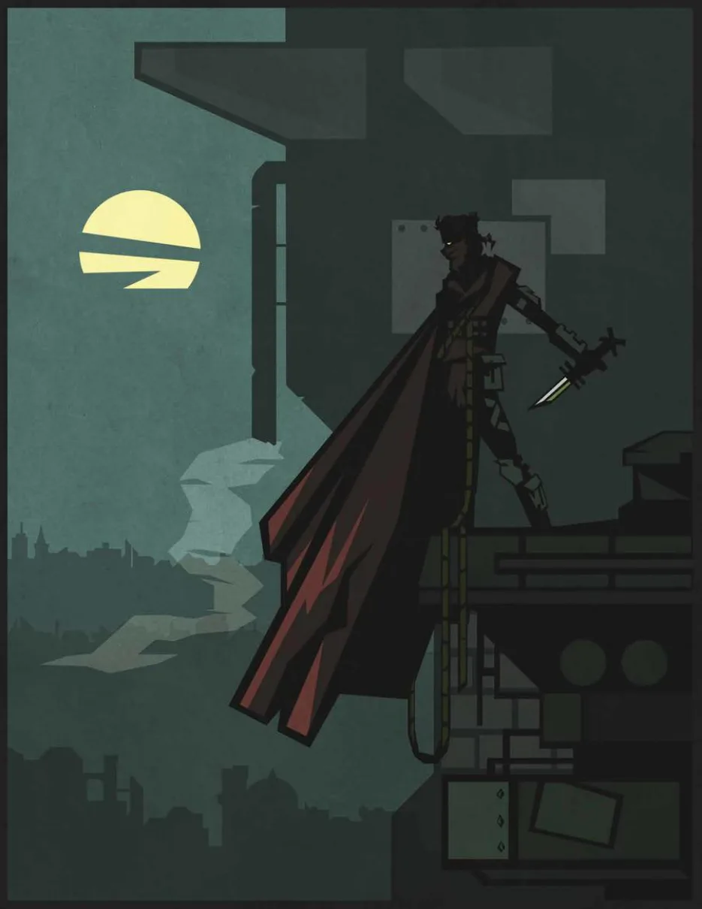
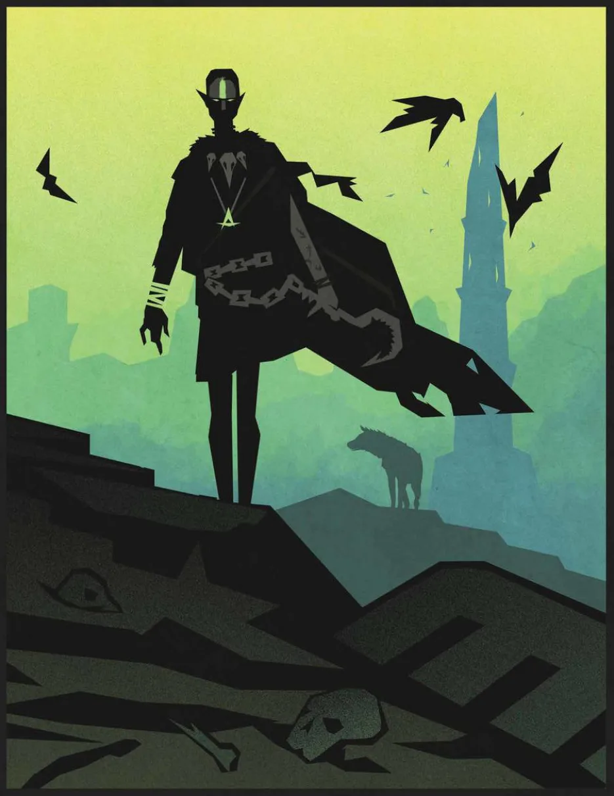
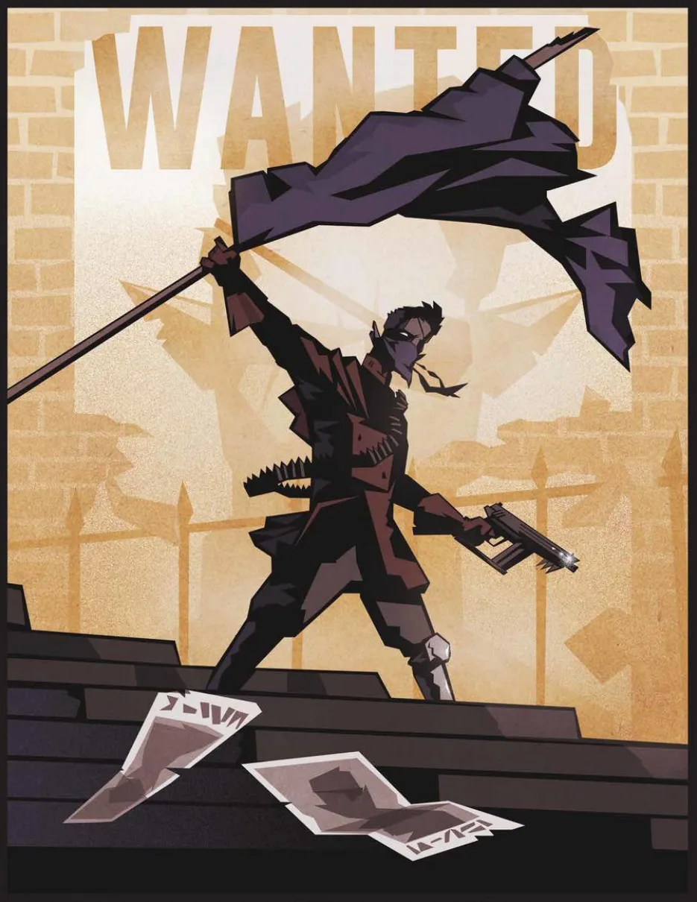
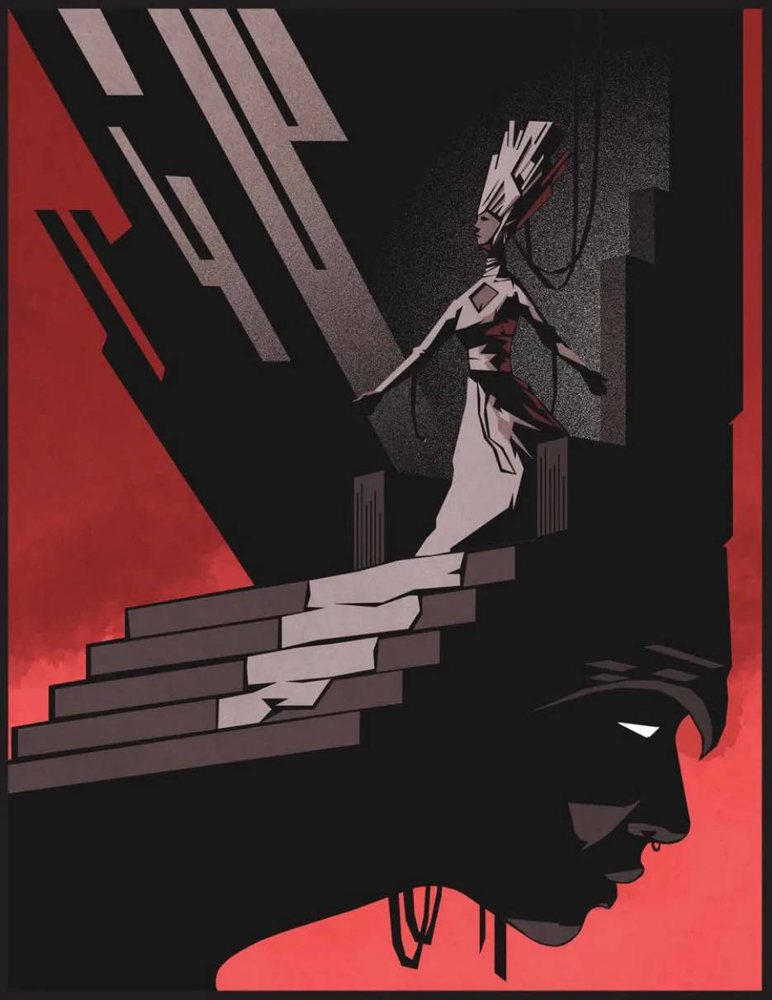
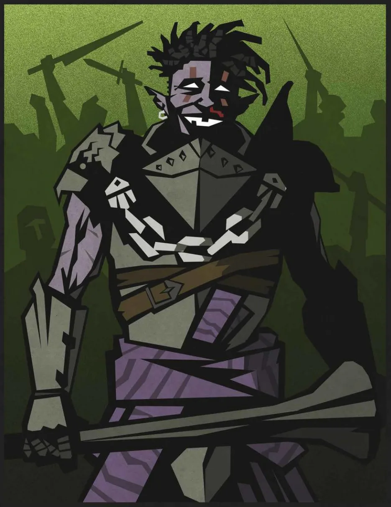
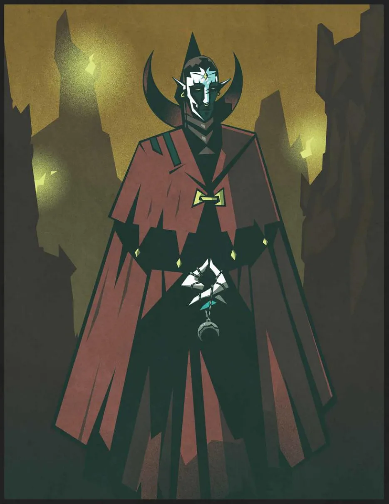
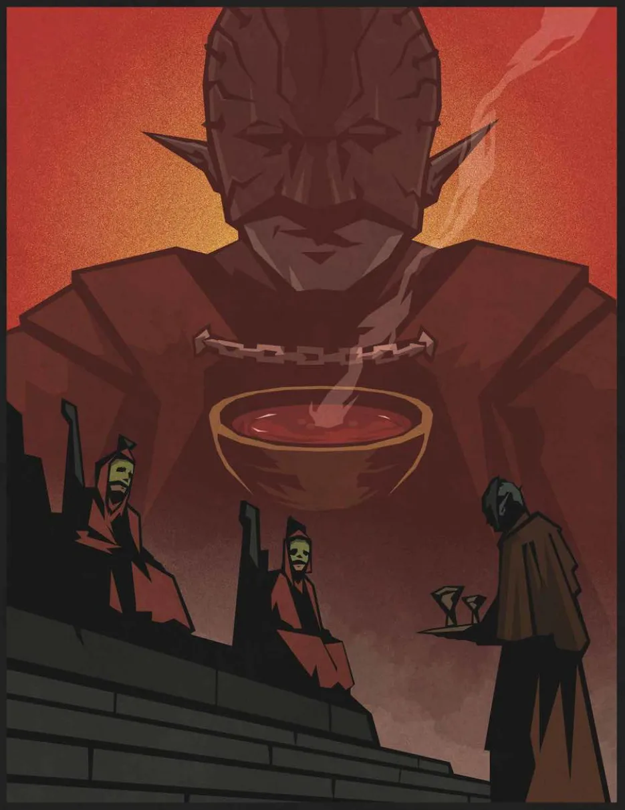
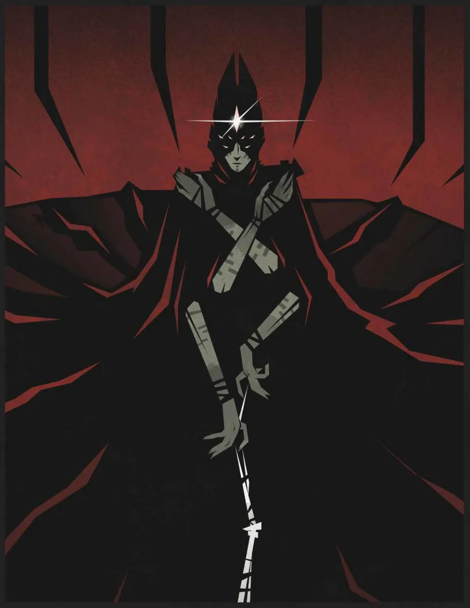
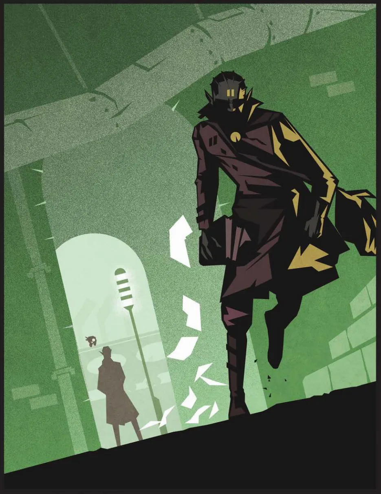
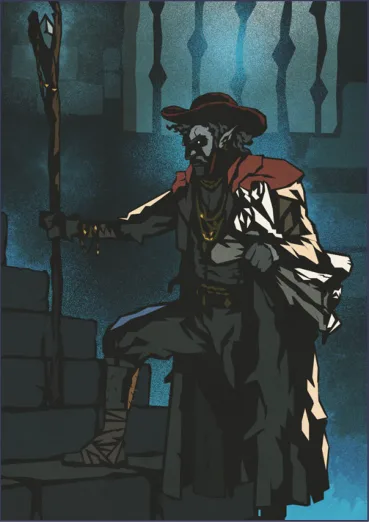

KlassenS. 25
GrundregelwerkMagister's Guide (nur Zusatzmaterial – Grundklasse steht in Sourcebooks, die noch folgen)

Azurite
Händlerin, Geschäftemacherin und Gaunerin aus den Süddocks … · S. 29
Bound
Akrobatische Selbstjustiz-Kämpferin … · S. 33
Carrion-Priest
Anhänger Charnels, einer ketzerischen Sekte von Todesanbetern … · S. 37
Firebrand
Revolutionärin, Aufwieglerin … · S. 41
Idol
Schöne Künstlerin und Revolutionärin … · S. 45
Knight
Mitglied eines alten Ritterordens … · S. 49
Lajhan
Die Auserwählten Unserer Glorreichen Herrin … · S. 53
Masked
Deine Dienstzeit hast du bei einem Hochelfen verbracht … · S. 57
Midwife
Aus einer Linie uralter Gelehrter und Verteidiger der Drow … · S. 61
Vermissian Sage
Das Vermissian ist ein grandioses Scheitern … · S. 65BW
Blood-Witch
Magister's Guide S. 22
Gutter Cleric
Magister's Guide S. 28 · Bild aus dem QuickstartIS
Inksmith
Magister's Guide S. 32ME
Mortician Executioner
Magister's Guide S. 42SA